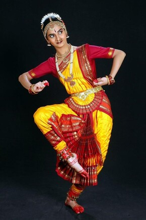
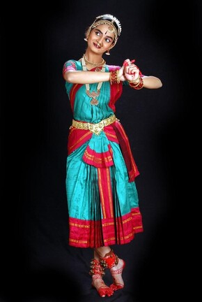

Ramya Shastry is a childhood friend of mine. We first met at our dance school when we were really young kids. We learnt dancing together for the next 15 years, along with that our friendship also blossomed. While I could not continue to pursue dancing, Ramya has continued to practice and excelled in classical dancing. I am so happy and proud of her exquisite talents, her passion and dedication for dance. She is now a seasoned dancer with many performances at prestigious events both at home and internationally. She now has her own dance troupe and dance school where she teaches young kids and adults who are interested in learning the classical dance form of Bharatnatyam.
As part of this assignment, I spoke to our teacher who trained us both to hear from him about how beautifully Ramya has prospered into a successful dancer. I also attended one of her sessions virtually and I was amazed to see how well she taught the moves and handled kids as young as 4 years old. Teaching kids requires a lot of patience and she has excelled in mastering the art of teaching too. This assignment gave me an opportunity to discuss about how she began her training, what personal challenges she faced, what motivated her to continue, her experience of performing, choreographic approaches, use of facial expressions and how emotions are conveyed through physicality. Hopefully I will also pick up dancing once again looking at the sense of pure joy and peace that comes with it.

The elephant pose

The peacock pose
Ramya is known for her grace, precision and intricate choreography. She uses vigorous faial expressions, spins and hand gestures to tell stories to traditional Indian music. She also experiments with other innovative forms of dance. She has received numerous prestigious awards in recognition of her achievements within the field of classical dance. Dancing is an integral part of her life and she loves the sense of freedom and expression that dancing brings. It is a powerful way to let go of stress, express emotions, explore the depths of creativity and feel closer to divine.
If you are curious to learn more about Indian Classical Dance forms, please visit Bharatnatyam Blog